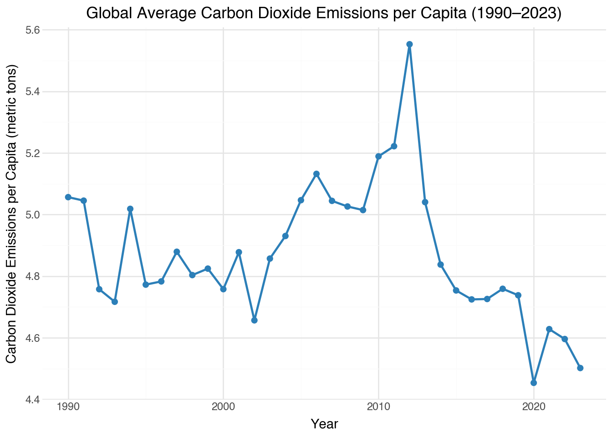
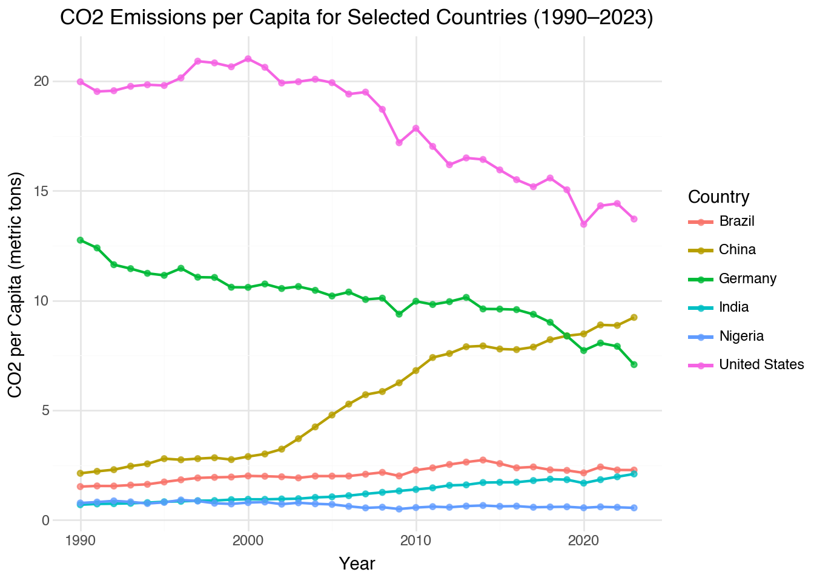
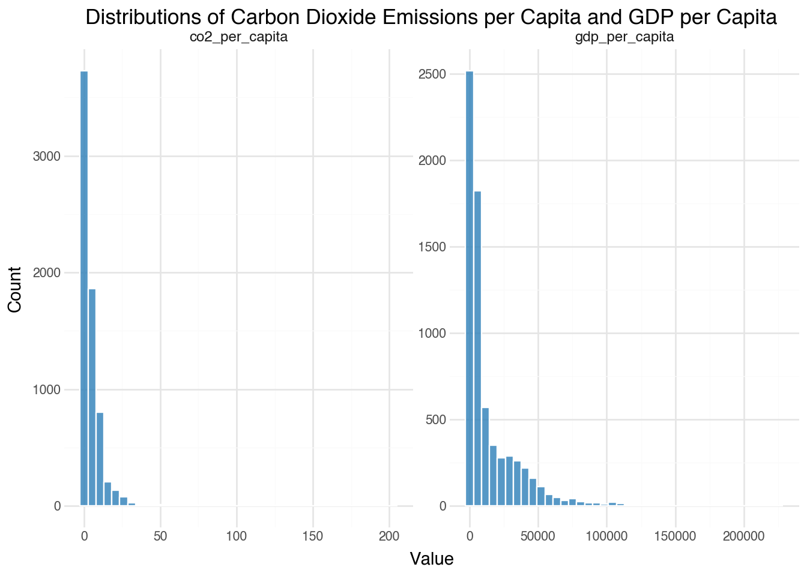
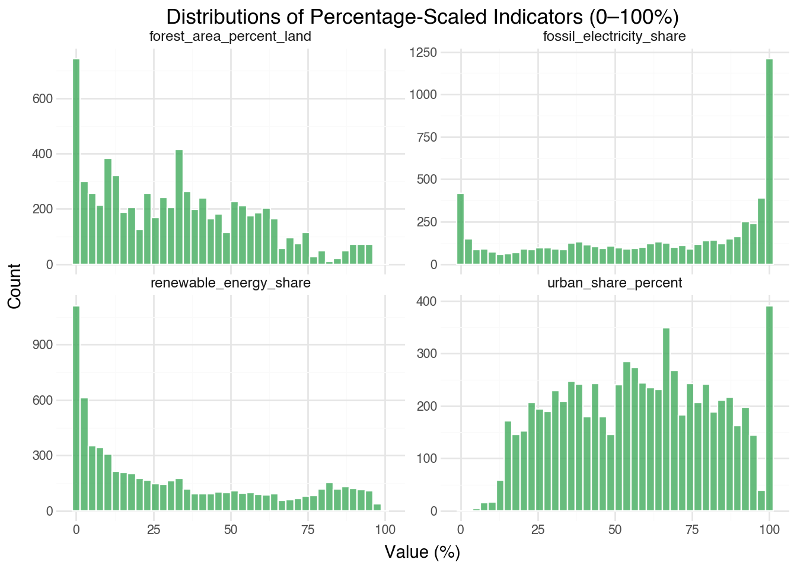
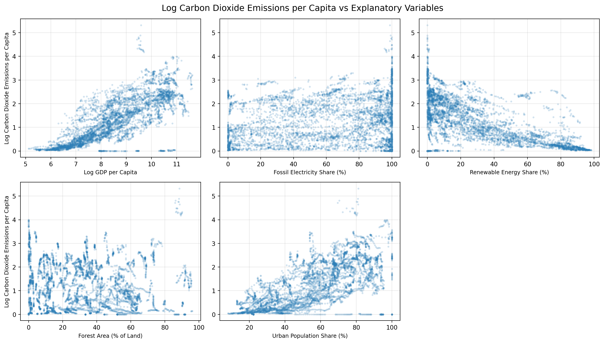
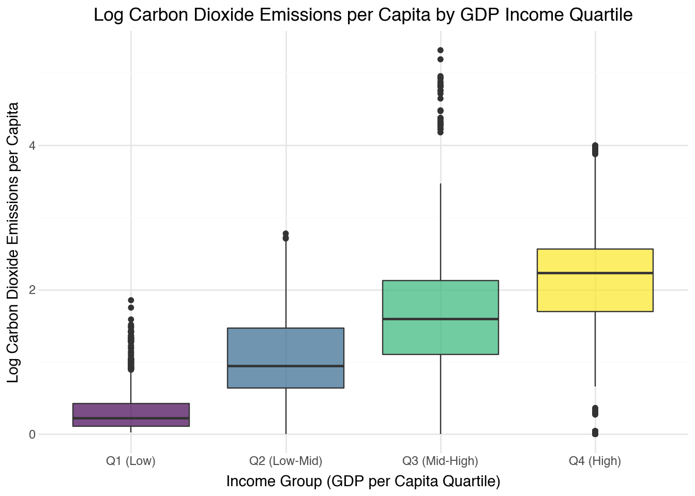
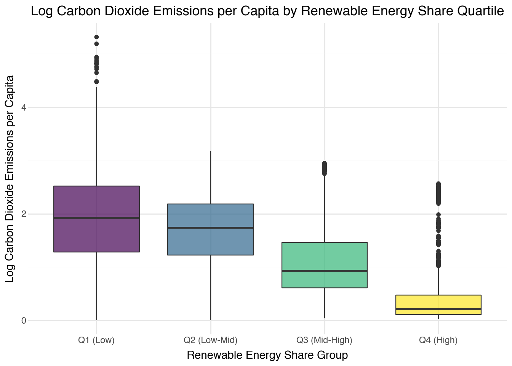
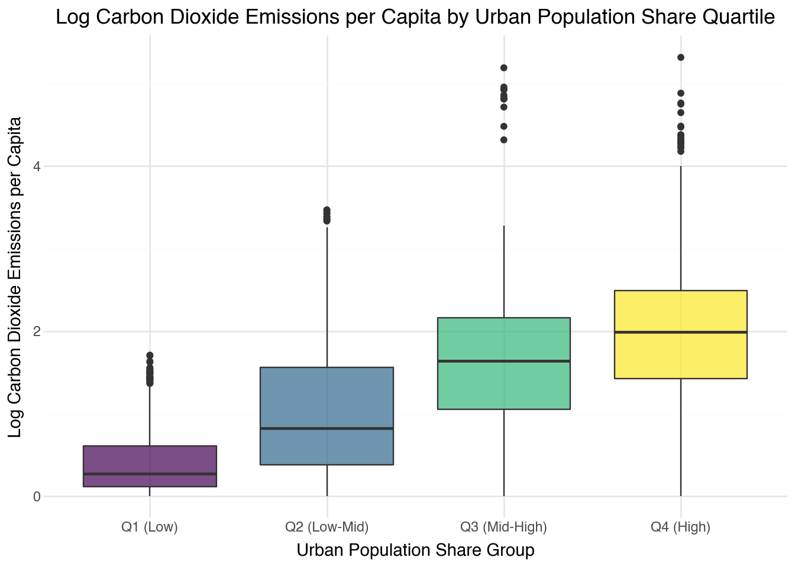
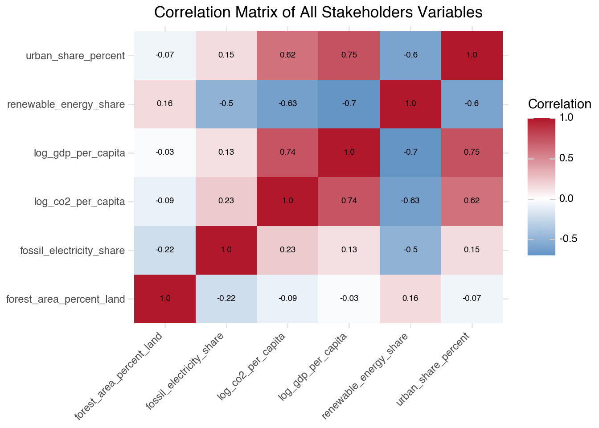
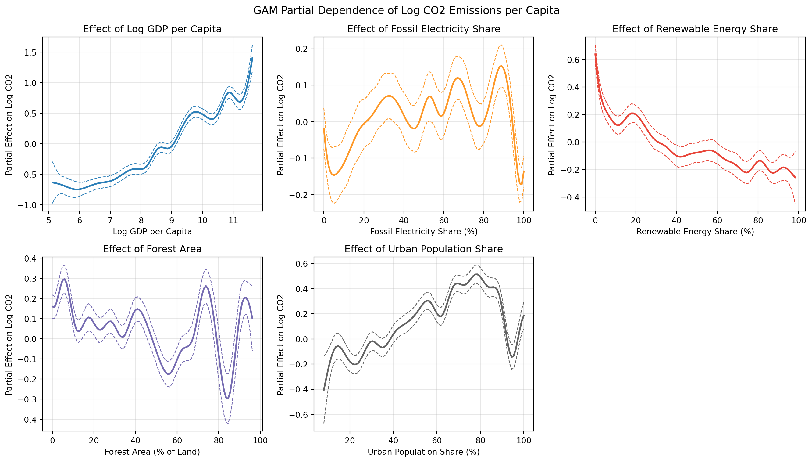

How have carbon dioxide emissions per capita evolved across countries from 1990 to 2023, and which economic, energy, and land-use factors explain these differences?
1. Introduction
Climate change is one of the major global challenges and is largely driven by greenhouse gas emissions, particularly carbon dioxide. Emissions from human activities have played a central role in global warming. According to “Climate Change 2023 Synthesis Report” from the Intergovernmental Panel on Climate Change (IPCC), global surface temperature during 2011–2020 was about 1.1 degrees Celsius higher than in 1850–1900 (IPCC, n.d.). Carbon dioxide emissions are also unevenly distributed across countries. Notably, the differences in carbon dioxide emissions per-capita are closely related to variations in energy systems, economic structures, and levels of development in terms of GDP. Understanding these differences is important for designing effective climate and energy policies.
Despite the global importance of reducing greenhouse gas emissions, countries differ significantly in both their levels of carbon dioxide emissions per capita and how these emissions have changed over time. These differences may be related to economic development, energy consumption patterns, and land-use practices. For example, roughly half of global carbon dioxide emissions are absorbed by land and ocean carbon sinks, while land-use changes such as deforestation and reforestation remain important components of the global carbon budget (Friedlingstein et al., n.d.). Research on global greenhouse gas emissions also shows that fossil fuel combustion is the primary source of emissions, accounting for about 71.6% of recent global greenhouse gas emissions (Crippa et al., n.d.). At the same time, emissions intensity relative to GDP has reached historically low levels, suggesting a relationship between economic development and carbon output. To better understand how economic, energy, and land-use factors relate to cross-country differences in emissions, systematic analysis using comparable and reliable international data is necessary.
This project examines how carbon dioxide emissions per capita have evolved across countries from 1990 to 2023, and which economic, energy, and land-use factors explain these differences. To address this research question, this analysis uses data from the World Bank Open Data API, which provides a comprehensive set of development indicators covering economic, energy, and land-use factors. The dataset includes annual observations for nearly all countries around the world and contains variables such as carbon dioxide emissions per capita, GDP per capita, renewable energy share, fossil-fuel electricity share, forest area as a percentage of land area, total population, and the share of population living in urban areas. Furthermore, the year of observation is included as a key temporal indicator to account for global trends and technological shifts over time.
The main outcome variable is carbon dioxide emissions per capita, which measures the average amount of carbon dioxide emissions produced per person in metric tons in each country. Economic development is represented by GDP per capita in constant 2015 US dollars , which reflects the average level of economic output per person. Energy structure is captured by two indicators: renewable energy share, which measures the percentage of total energy consumption coming from renewable sources, and fossil-fuel electricity share, which represents the percentage of electricity generated from fossil fuels. Land-use conditions are represented by forest area as a percentage of total land area. In addition, demographic characteristics are included through total population and the share of the population living in urban areas. Finally, the year variable serves as a time-based control, allowing the analysis to isolate structural effects from long-term temporal trends. These variables allow for comparisons across countries and help examine how economic development, energy structure, and land-use patterns are associated with differences in carbon dioxide emissions.
2. Methods
2.1 Data Acquisition
The data for this project were obtained from World Bank Open Data platform through the World Bank Open Data API. The API provides access to the World Development Indicators (WDI) database, which contains standardized economic, energy, and land-use indicators for all countries and regions around the world. The analysis focuses on the period from 1990 to 2023, which ensures sufficient data availability for most countries. Several relevant indicators were retrieved from the API by a loop, including carbon dioxide emissions per capita, GDP per capita, renewable energy share, fossil-fuel electricity share, forest area as a percentage of total land area, total population, and the share of the population living in urban areas. The API responses were in JSON format and converted into pandas DataFrames for further analysis by using the requests library in Python. All data were retrieved programmatically through the API to ensure reproducibility of the data acquisition process.
2.2 Data Wrangling and Cleaning
After retrieving the indicators from the API, several steps were taken to prepare the data for analysis. The raw API responses contain individual datasets for each indicator, so the first step was to organize these datasets into a consistent structure. The goal was to construct a dataset in which each row represents a country–year observation and each column represents a variable.
The datasets were merged using ISO3 country codes, i.e. three-letter country codes, and year identifiers. These variables provide consistent keys across World Bank indicators and allow observations from different datasets to be combined into a single table. The reason that not using the country name is because the country name might not be consistent across the different datasets although the data comes from the same source.
The separately retrieved indicator datasets were initially combined into a long-format dataset. If there were nested API fields, they were then flattened to extract the nested values into separate columns. As the World Bank dataset contains data for regions/aggregates as well as countries, such as Africa Eastern and Southern region, these regional aggregates were removed from the dataset to avoid misinterpretation. Therefore, it would be necessary to query the World Bank country metadata endpoint to collect all the country metadata in World Bank Open Data API. As the metadata contains a field called region_name for each country/region, when its value is “Aggregates”, it means the row is a regional/group aggregate data rather than a country data. After collecting all the aggregate codes (name may also be fine, but codes are safer due to natural uniqueness), the dataset was filtered to retain only rows whose countryiso3code belongs to the valid country set. In effect, this step ensures that the final panel is composed only of individual countries, rather than regional summaries such as Africa Eastern and Southern or other World Bank aggregate groups. This is important because the project aims to compare country-level patterns, and aggregate units would distort those comparisons.
To facilitate the analysis, the long dataset was reshaped into a wide country-year dataset, where each indicator becomes a column instead of a value in a single column which stored all the indicator names/codes. This process produced a unified dataset containing economic, energy, land-use, and demographic indicators for each country and year. Data types were then standardized to ensure consistency across datasets. All the indicator variables were converted to float, as they are either percentages or metric tons or dollars, which are all numerical float values. Country identifiers and year variables were also checked to ensure consistent formatting across the merged datasets. Missing values were inspected for each variable before analysis. They were coded to NaN from all possible missing-value placeholders to ensure the consistency of later missing-value handling. Finally, several validation checks were performed to verify the integrity of the dataset. These checks included identifying duplicate country–year observations, formating of the country ISO3 codes, year range, and inspecting the range of indicator variables. These steps help ensure that the dataset is suitable for subsequent exploratory and statistical analysis.
For the main analysis, missing values were handled at the row level by dropping observations with missing values in the core analysis variables, while keeping all other available observations in the dataset until that stage. This approach keeps the missing-value treatment transparent and avoids introducing additional assumptions through imputation.
2.3 Exploratory Data Analysis (EDA) and Regression Analysis
EDA was conducted to examine the structure of the dataset and to identify patterns related to the research question. First, descriptive statistics were computed for all numerical variables included in the dataset. Counts, means, medians, standard deviation, minimum & maximum values, and percentiles were calculated to summarize the distribution of each numerical variable and not including country codes and names. These measures provide an overview of the variables’ distributions, which can help identify potential extreme values or outliers.
Visual exploration was then performed to examine patterns in the data. Several graphical methods were used to explore relationships between variables and to identify potential trends. Line plots were used to examine how carbon dioxide emissions per capita change over time. Histograms were used to inspect the distribution of individual variables and to identify skewness or potential outliers. Scatter plots were used to examine the relationship between carbon dioxide emissions per capita and explanatory variables. Box plots with the implementation of quantile binning were used to examine and confirm the relationship between carbon dioxide emissions per capita and explanatory variables that were identified in the scatter plots. So is the correlation matrixto examine the correlation between all the variables.
2.4 Feature Engineering
Based on the histograms performed in EDA, for some indicators, a log-scale transformation must be applied to compress the scale and reduce the influence of extreme values for non-percentage variables if the right-skewed distribution is observed. For percentage variables, the log-scale transformation is not necessary. For date vairable or year variable, it is necessary to center the variable by subtracting the start year (1990).
2.5 Regression Analysis
In order to discover the association between carbon dioxide emissions per capita and potential explanatory factors with year variable as the time-varying effect, regression analysis was conducted. Linear regression models were used to evaluate how economic development, energy structure, and land-use indicators are related to differences in carbon dioxide emissions per capita across countries in terms of linear relationships. carbon dioxide emissions per capita were treated as the dependent variable, while GDP per capita, energy indicators, centered year variable, and land-use variables were treated as independent variables.
Using linear regression only may not be sufficient to capture the complex relationship between carbon dioxide emissions per capita and potential explanatory factors in real life scenarios in general. In addition, generalized additive models (GAMs) were used to explore potential nonlinear relationships between variables. GAM models allow smooth functions of predictors to be estimated, which can capture nonlinear patterns that may not be adequately represented by a linear model. This approach is particularly useful when examining the relationship between economic development and emissions, which may change at different stages of economic growth. Note, the linear control term was added to the GAM model to capture the time-varying effect of centered year variable.
All analyses were conducted using Python. Data acquisition was carried out using the requests library. Data manipulation and preparation were performed using pandas and numpy. Visualizations were created using plotnine and matplotlib. Linear regression models were estimated using the statsmodels package, and generalized additive models (GAMs) were estimated using the pygam library.
3. Preliminary Results
3.1 Data Acquisition, Wrangling and Cleaning
Show code for data acquisition
WB_BASE_URL ="https://api.worldbank.org/v2"# Indicator codes aligned with the research questionINDICATORS = {"co2_per_capita": "EN.GHG.CO2.PC.CE.AR5","gdp_per_capita": "NY.GDP.PCAP.KD","fossil_electricity_share": "EG.ELC.FOSL.ZS","renewable_energy_share": "EG.FEC.RNEW.ZS","forest_area_percent_land": "AG.LND.FRST.ZS","population_total": "SP.POP.TOTL","urban_share_percent": "SP.URB.TOTL.IN.ZS"}START_YEAR =1990END_YEAR =2023def fetch_world_bank_indicator(indicator_code, start_year=1990, end_year=2023, per_page=20000): page =1 all_rows = []whileTrue: url =f"{WB_BASE_URL}/country/all/indicator/{indicator_code}" params = {"format": "json","date": f"{start_year}:{end_year}","per_page": per_page,"page": page, } response = requests.get(url, params=params, timeout=30) response.raise_for_status() payload = response.json()iflen(payload) <2or payload[1] isNone:break all_rows.extend(payload[1]) total_pages =int(payload[0]["pages"])if page >= total_pages:break page +=1 time.sleep(0.1)return pd.DataFrame(all_rows)# Pull raw records directly from the API for all required indicatorsframes = []for variable_name, indicator_code in INDICATORS.items(): df_i = fetch_world_bank_indicator(indicator_code, START_YEAR, END_YEAR) df_i["variable_name"] = variable_name frames.append(df_i)wb_raw = pd.concat(frames, ignore_index=True)# Keep only non-missing observed values for previewwb_raw = wb_raw[wb_raw["value"].notna()].copy()# Raw API preview dataframe (no local file saved)display(wb_raw.head(20))print("Shape:", wb_raw.shape)
Show code for data flattening
# Flatten nested JSON fields# The World Bank API returns 'indicator' and 'country' as dicts inside each# row. Extract the id/value fields into plain columns so the data can be# filtered and merged as a regular flat table.wb_raw["indicator_code"] = wb_raw["indicator"].apply(lambda x: x["id"] ifisinstance(x, dict) elseNone)wb_raw["indicator_name"] = wb_raw["indicator"].apply(lambda x: x["value"] ifisinstance(x, dict) elseNone)wb_raw["country_name"] = wb_raw["country"].apply(lambda x: x["value"] ifisinstance(x, dict) elseNone)flat_wb_raw_shape = wb_raw.shape
Data were retrieved sucessfully from the World Bank Open Data API by using JSON format within a for loop of the indiators specified in advance for this project. Then merged each indicator-specific dataset into a single raw, long format dataset by using countryiso3code (3-letter country codes) and year as the keys. However, in the initial dataset, the values of the coloumns indicator and country were nested dictionaries, which were not suitable for further analysis. Therefore, the nested columns were flattened into plain columns so the data can be filtered and merged as a regular flat table by picking out the attributes to form new columns. The dictionaries in indicator column had the indicator codes, whcih were mapped to indicator_code in the flattened dataset, and their official names, which were mapped to variable_name in the flattened dataset, and the ones in country column had the country ids and their official names, which are mapped to country_name int the flattened dataset. After that, the flattened dataset had 59734 rows and 12 columns.
Show code for aggregates data removal
# Remove regional/income-group aggregates# The World Bank API mixes true country records with regional and income-group# aggregates (e.g. "Africa Eastern and Southern"). Fetch the country metadata# endpoint and retain only rows whose region_name is not "Aggregates".def get_country_metadata(): page =1 all_countries = []whileTrue: params = {"format": "json", "per_page": 400, "page": page} response = requests.get(f"{WB_BASE_URL}/country", params=params, timeout=30) response.raise_for_status() payload = response.json() metadata = payload[0] rows = payload[1] all_countries.extend(rows)if page >=int(metadata["pages"]):break page +=1 countries_df = pd.DataFrame(all_countries) countries_df["region_name"] = countries_df["region"].apply(lambda x: x.get("value") ifisinstance(x, dict) else np.nan )return countries_dfcountries_df = get_country_metadata()valid_iso3 =set(countries_df.loc[countries_df["region_name"] !="Aggregates", "id"].dropna())aggregate_rows = wb_raw[~wb_raw["countryiso3code"].isin(valid_iso3)].copy()aggregate_pairs = aggregate_rows[["countryiso3code", "country_name"]].drop_duplicates()print("Rows before removing aggregates:", wb_raw.shape[0])print("Unique aggregate (iso3, country) pairs removed:", aggregate_pairs.shape[0])display(aggregate_pairs.head(10))wb = wb_raw[wb_raw["countryiso3code"].isin(valid_iso3)].copy()wb_shape = wb.shapeprint("Rows after removing aggregates:", wb.shape[0])
With previewing some rows of the flattened dataset, some aggregates/regions data were found, rows with a country_name like “Africa Eastern and Southern” were removed to avoid misinterpretation by using the country metadata endpoint. After the removal of aggregates data, the dataset had 48548 rows left.
Show code for reshaping dataset
# Create the year identifier# Convert the API 'date' field to a numeric year column before selecting# country-year keys for the reshape step below.wb["year"] = pd.to_numeric(wb["date"], errors="coerce")# Retain only columns needed for the analysis# Drop auxiliary API fields and keep the five columns required for reshaping.wb_clean = wb[ ["countryiso3code","country_name","year","variable_name","indicator_code","value", ]].copy()display(wb_clean.head(20))print("Clean panel shape:", wb_clean.shape)# Reshape long to wide (one row per country-year)# pivot_table spreads each variable_name into its own column, using ISO3 code# and year as the row keys. country_name is added back as a label column via a# left join, then moved to the front for readability.wb_wide = wb_clean.pivot_table( index=["countryiso3code", "year"], columns="variable_name", values="value",).reset_index()country_year_labels = ( wb_clean[["countryiso3code", "year", "country_name"]] .drop_duplicates(subset=["countryiso3code", "year"]))wb_wide = wb_wide.merge( country_year_labels, on=["countryiso3code", "year"], how="left",)wb_wide = wb_wide[ ["countryiso3code", "country_name", "year"]+ [col for col in wb_wide.columns if col notin ["countryiso3code", "country_name", "year"]]]wb_wide_shape = wb_wide.shape
Next, since the project aims to analyze based on a country-year dataset, the long dataset was reshaped into a wide dataset, where each indicator becomes a column instead of a value in a single column which stored all the indicator names/codes. To ensure safety during the reshaping process, the year identifier was created by converting the API date field into a numeric year so the dataset can be indexed by country-year in the reshape step. After reshaping, the dataset became wide format containing co2_per_capita, gdp_per_capita, fossil_electricity_share, renewable_energy_share, forest_area_percent_land, population_total, and urban_share_percent data for each country that represents in countryiso3code and country_name, and year only without other redundant columns and information. At this stage, the dataset had 7378 rows and 10 columns.
Show code for data type standardization
# Standardize data types (If needed after checking initial data types)# All indicator columns are numeric (percentages, USD, metric tons). Coerce to# float so downstream arithmetic and comparisons behave consistently. And year is stored as integer.display(wb_wide.dtypes.rename("dtype").reset_index().rename(columns={"index": "Columns"}))
Data Type Inspection Table
Columns
dtype
0
countryiso3code
object
1
country_name
object
2
year
int64
3
co2_per_capita
float64
4
forest_area_percent_land
float64
5
fossil_electricity_share
float64
6
gdp_per_capita
float64
7
population_total
float64
8
renewable_energy_share
float64
9
urban_share_percent
float64
Show code for missing value placeholder standardization
# Standardize missing-value placeholders# Replace common string sentinels with NaN so that all missing-value checks# operate on a single representation.missing_markers = ["", " ", "N/A", "NA", "na", "null", "Null", "NULL", "-", "--", ".."]wb_wide = wb_wide.replace(missing_markers, np.nan)
According to Data Type Inspection Table, all the indicator columns were float, which were accurate as they were either percentages or metric tons or dollars. The year column was treated as integer, and the country metadata columns were object, i.e. strings. Therefore, it was not necessary to standardize the data types further. In addition, to ensure the consistency of the missing-value inspection, replace all the possible missing-value placeholders, such as empty strings, spaces, N/A, NA, na, null, Null, NULL, -, --, .., etc., to NaN strictly in the dataset.
Show code for plausibility checks and saving the dataset
# Check for out-of-range values based on each variable's units and save countsplausibility_bounds = {"co2_per_capita": (0, None), # metric tons per capita"gdp_per_capita": (0, None), # constant 2015 USD per person"fossil_electricity_share":(0, 100), # % of electricity from fossil fuels"renewable_energy_share": (0, 100), # % of total final energy consumption"forest_area_percent_land":(0, 100), # % of land area"population_total": (0, None), # count"urban_share_percent": (0, 100), # % of population}oob_co2 =int((wb_wide["co2_per_capita"] <0).sum())oob_gdp =int((wb_wide["gdp_per_capita"] <0).sum())oob_fossil =int(((wb_wide["fossil_electricity_share"] <0) | (wb_wide["fossil_electricity_share"] >100)).sum())oob_renew =int(((wb_wide["renewable_energy_share"] <0) | (wb_wide["renewable_energy_share"] >100)).sum())oob_forest =int(((wb_wide["forest_area_percent_land"] <0) | (wb_wide["forest_area_percent_land"] >100)).sum())oob_pop =int((wb_wide["population_total"] <0).sum())oob_urban =int(((wb_wide["urban_share_percent"] <0) | (wb_wide["urban_share_percent"] >100)).sum())# Confirm ISO3 codes follow the 3-capital-letter standard, no duplicate# country-year rows exist, year is within study period, and year dtype is correct before saving.invalid_iso3 = wb_wide[~wb_wide["countryiso3code"].str.match(r"^[A-Z]{3}$", na=False)]oob_iso3 = invalid_iso3.shape[0]duplicate_country_year = wb_wide.duplicated(["countryiso3code", "year"]).sum()oob_year =int(((wb_wide["year"] < START_YEAR) | (wb_wide["year"] > END_YEAR)).sum())print("Rows with non-standard ISO3 codes:", oob_iso3)print("Duplicate country-year rows:", duplicate_country_year)print(f"Rows outside study period ({START_YEAR}–{END_YEAR}):", oob_year)# Save cleaned wide datasetwb_wide.to_csv("wb_wide.csv", index=False)print("Saved wb_wide.csv:", wb_wide.shape)
Before performing the plausibility checks, it would be necessary to recall the units of each indicator and the possible formats/ranges of values for each variable. Here are the units of each indicator:
co2_per_capita: metric tons per capita, so the range should be non-negative.
gdp_per_capita: constant 2015 USD per person, so the range should be non-negative.
fossil_electricity_share: percentage of electricity from fossil fuels, so the range should be between 0 and 100 inclusive.
renewable_energy_share: percentage of total final energy consumption, so the range should be between 0 and 100 inclusive.
forest_area_percent_land: percentage of land area, so the range should be between 0 and 100 inclusive.
population_total: count, so the range should be non-negative.
urban_share_percent: percentage of population, so the range should be between 0 and 100 inclusive.
Therefore, applying the reasonable range for each indicator to check for the entire dataset. Here are the results:
co2_per_capita: 0 out of bounds rows
gdp_per_capita: 0 out of bounds rows
fossil_electricity_share: 0 out of bounds rows
renewable_energy_share: 0 out of bounds rows
forest_area_percent_land: 0 out of bounds rows
population_total: 0 out of bounds rows
urban_share_percent: 0 out of bounds rows
Hence, there were no out of bounds values in the dataset, while each row had a standard ISO3 country code with no duplicate country-year rows existed. In addition, the year was within the study period.
Show code for missing value inspection
# Count and compute the share of missing values for every column in the wide# dataset. Sorting by count (descending) puts the most problematic variables# at the top so patterns are immediately visible.missing_counts = wb_wide.isna().sum()missing_pct = (wb_wide.isna().mean() *100).round(2)missing_tbl = ( pd.DataFrame({"Missing (count)": missing_counts, "Missing (%)": missing_pct}) .reset_index() .rename(columns={"index": "Variable"}) .sort_values("Missing (count)", ascending=False) .reset_index(drop=True))display(missing_tbl)
Missing Values Inspection Table
Variable
Missing (count)
Missing (%)
0
fossil_electricity_share
1199
16.25
1
renewable_energy_share
632
8.57
2
co2_per_capita
476
6.45
3
gdp_per_capita
474
6.42
4
forest_area_percent_land
317
4.30
5
countryiso3code
0
0.00
6
country_name
0
0.00
7
year
0
0.00
8
population_total
0
0.00
9
urban_share_percent
0
0.00
Then proceed to inspect the missing values in the dataset. According to Missing Values Inspection Table, (ignore countryiso3code and country_name columns, and year column as left-join were performed while merging the dataset in the early steps) population_total and urban_share_percent have no missing values. While co2_per_capita, gdp_per_capita, fossil_electricity_share, renewable_energy_share, and forest_area_percent_land have low missing percentage (less than 10%). However, fossil_electricity_share has a moderate (10-20%) missing percentage 16.25%. The dataset still contains a large number of useful observations in other variables, so the missingness was retained during EDA so that the available observations could be used for the analysis. Later, during the regression analysis, observations with missing values in the explanatory variables would be dropped at row level to aviod introducing additional assumptions through imputation while maintaing a sufficiently large sample size for the regression analysis.
3.2 Exploratory Data Analysis (EDA) Results
3.2.1 Descriptive Statistics
Show code for summary statistics
# Compute descriptive statistics for all numeric indicator columns.# Transposing puts variables as rows and statistics as columns, which is# easier to read in a wide document layout.# Rounding to 2 decimal places keeps the table compact.summary_stats = ( wb_wide .describe() .T .reset_index() .rename(columns={"index": "Variable"}) .round(2))display(summary_stats)
Descriptive Statistics Table (For all numeric variables)
Variable
count
mean
std
min
25%
50%
75%
max
0
year
7378.0
2006.50
9.810000e+00
1990.00
1998.00
2006.50
2015.00
2.023000e+03
1
co2_per_capita
6902.0
4.87
9.570000e+00
0.00
0.49
2.15
6.23
2.028700e+02
2
forest_area_percent_land
7061.0
32.61
2.482000e+01
0.00
10.94
31.00
51.85
9.623000e+01
3
fossil_electricity_share
6179.0
62.83
3.458000e+01
0.00
34.84
70.92
96.66
1.000000e+02
4
gdp_per_capita
6904.0
14290.74
2.133999e+04
166.71
1592.27
4835.19
19027.65
2.258842e+05
5
population_total
7378.0
30806944.54
1.238318e+08
8798.00
630587.25
5386675.50
19193197.75
1.438070e+09
6
renewable_energy_share
6746.0
30.73
3.052000e+01
0.00
3.60
19.50
53.30
9.830000e+01
7
urban_share_percent
7378.0
57.77
2.441000e+01
5.27
37.24
58.35
77.43
1.000000e+02
The Descriptive Statistics Table (For all numeric variables) table provids an overview of the main characteristics of the dataset. Carbon dioxide emissions per capita varies substantially across countries. The average value is approximately 4.87 metric tons per person, while the median is much lower at around 2.15, suggesting that the distribution is right skewed with a small number of countries having very high emissions levels.
Economic development also varies widely across the sample. GDP per capita ranges from about 167 USD to more than 225,000 USD, with a median value of roughly 4,835 USD, reflecting large differences in income levels between countries.
Energy structure indicators also show considerable variation. The average share of electricity generated from fossil fuels is approximately 62.8%, while renewable energy accounts for about 30.7% of total final energy consumption on average. Land-use patterns differ across countries as well, with forest area covering about 32.6% of land area on average. Demographic variables also display wide ranges. Total population varies from fewer than 10,000 people to more than 1.4 billion, while the share of population living in urban areas averages about 57.8%. Overall, these statistics indicate substantial cross-country heterogeneity in economic development, energy systems, and land-use characteristics, which may help explain differences in carbon dioxide emissions across countries.
Show code for zero value inspection
# Identify rows where any of the four indicators of interest equals zero.# Flag columns make it easy to see which variable(s) triggered the match.# Rows are included if at least one of the four flags is True.indicator_cols = [col for col in INDICATORS if col in wb_wide.columns]zero_flags = wb_wide.copy()zero_flags["co2_zero"] = zero_flags["co2_per_capita"] ==0zero_flags["forest_zero"] = zero_flags["forest_area_percent_land"] ==0zero_flags["fossil_zero"] = zero_flags["fossil_electricity_share"] ==0zero_flags["renew_zero"] = zero_flags["renewable_energy_share"] ==0zero_any = ( zero_flags[ zero_flags[["co2_zero", "forest_zero", "fossil_zero", "renew_zero"]].any(axis=1) ] [["countryiso3code", "country_name", "year"]+ indicator_cols+ ["co2_zero", "forest_zero", "fossil_zero", "renew_zero"]] .sort_values(["country_name", "year"]) .reset_index(drop=True))# Build one table: each row is a country, columns show which zero conditions applyzero_conditions = {"co2_per_capita = 0": "co2_zero","forest_area_percent_land = 0": "forest_zero","fossil_electricity_share = 0": "fossil_zero","renewable_energy_share = 0": "renew_zero",}all_countries =sorted(zero_any["country_name"].dropna().unique().tolist())rows = []for country in all_countries: country_rows = zero_any[zero_any["country_name"] == country] rows.append({"Country name": country,**{label: "Yes"if country_rows[flag].any() else""for label, flag in zero_conditions.items()} })display(pd.DataFrame(rows))
Country with zero values in CO2 per capita, forest area, fossil electricity share, or renewable energy share
Country name
co2_per_capita = 0
forest_area_percent_land = 0
fossil_electricity_share = 0
renewable_energy_share = 0
0
Albania
Yes
1
American Samoa
Yes
2
Andorra
Yes
3
Antigua and Barbuda
Yes
4
Bahamas, The
Yes
5
Bahrain
Yes
6
Bermuda
Yes
7
Bhutan
Yes
8
Brunei Darussalam
Yes
9
Burundi
Yes
10
Cayman Islands
Yes
11
Congo, Rep.
Yes
12
Curacao
Yes
13
Ethiopia
Yes
14
Ghana
Yes
15
Gibraltar
Yes
Yes
16
Hong Kong SAR, China
Yes
17
Kuwait
Yes
18
Lao PDR
Yes
19
Malta
Yes
20
Monaco
Yes
21
Nauru
Yes
Yes
Yes
22
Nepal
Yes
23
Northern Mariana Islands
Yes
24
Oman
Yes
25
Palau
Yes
26
Qatar
Yes
Yes
27
Saudi Arabia
Yes
28
Sint Maarten (Dutch part)
Yes
29
St. Kitts and Nevis
Yes
30
Turkmenistan
Yes
31
Tuvalu
Yes
Yes
32
United Arab Emirates
Yes
However, there were some suspicious observations in the dataset. According to the table above, it was suspicious that Nauru and Tuvalu had 0 carbon dioxide emissions per capita almost every year from 1990 to 2023. After validating the data, these two countries are very small and had no heavy industry (no hevay plants, mills, or factories) and a possible rounding in World Bank data for extreme low values. Therefore, these observations were retained because they likely represent the real life situation in Nauru and Tuvalu. For forest area percentage, zeros appear for highly developed countries such as Monaco or Gibraltar. Zeros for fossil electricity share occur in countries where electricity generation relies primarily on hydropower, such as Bhutan or Nepal. Conversely, zero renewable energy shares appear in some fossil fuel dependent countries, such as Saudi Arabia or Qatar. Therefore, these suspicious observations were retained in the dataset because they represent the real life situation in these countries.
3.2.2 Basic EDA Visualizations
Show code for global CO2 trend
# Aggregate to global average per year to reveal the overall emissions trend.# Dropping NaN before groupby ensures only years with actual country data# contribute to the mean, avoiding artificially low averages.co2_trend = ( wb_wide .groupby("year", as_index=False)["co2_per_capita"] .mean() .rename(columns={"co2_per_capita": "mean_co2"}))( ggplot(co2_trend, aes(x="year", y="mean_co2")) + geom_line(color="#2C7FB8", size=1) + geom_point(color="#2C7FB8", size=2) + labs( title="Global Average Carbon Dioxide Emissions per Capita (1990–2023)", x="Year", y="Carbon Dioxide Emissions per Capita (metric tons)" ) + theme_minimal())

Figure 1: Global average CO2 emissions per capita over time (1990–2023)
Figure 1 shows the trend of global average carbon dioxide emissions per capita from 1990 to 2023. Overall, emissions per capita remained relatively stable during the early 1990s, fluctuating from 4.7 to 5.2 metric tons per person approximately. From 2000, carbon dioxide emissions per capita gradually increased, reaching a peak around 2012 at approximately 5.55 metric tons per capita. After this peak, emissions per capita declined sharply. The decrease became more gentle after 2013 and dropped sharply around again 2020, reflecting the global economic downturn during the COVID-19 pandemic. Overall, the figure suggests that global per capita emissions increased during the 2000s but have generally declined later, so a decrease compare to 1990.
Show code for country-level CO2 trends
# Six countries chosen to represent a range of income levels and world regions,# making the cross-country divergence in emission trajectories visible.selected_iso3 = ["USA", "CHN", "DEU", "IND", "BRA", "NGA"]co2_countries = ( wb_wide[wb_wide["countryiso3code"].isin(selected_iso3)] [["country_name", "year", "co2_per_capita"]] .dropna())( ggplot(co2_countries, aes(x="year", y="co2_per_capita", color="country_name")) + geom_line(size=0.9) + geom_point(size=1.5, alpha=0.7) + labs( title="CO2 Emissions per Capita for Selected Countries (1990–2023)", x="Year", y="CO2 per Capita (metric tons)", color="Country" ) + theme_minimal() + theme(legend_position="right"))

Figure 2: CO2 per capita trends for selected representative countries (1990–2023)
United States and Germany represent developed countries, China and India represent large emerging economies, Brazil represents a middle-income country, and Nigeria represents a lower-income country. Therefore, these countries are comparable and chosen to represent a range of income levels and world regions, making the variation between countries in carbon dioxide emissions per capita trends over time visible.
Figure 2 illustrates the evolution of carbon dioxide emissions per capita for several representative countries from 1990 to 2023. The United States have the highest emissions levels druing the entire period but showed a gradual decline after 2000. Germany also exhibits a clear downward trend, reflecting reductions in carbon dioxide emissions over time. In contrast, China shows a rapid increase in carbon dioxide emissions per capita, particularly after 2000, corresponding with rapid industrial growth. India displays a steady upward trend, though emissions remain substantially lower than those developed countries. Brazil shows relatively stable carbon dioxide emissions trend, while Nigeria remains at very low carbon dioxide emissions levels (even a slight decline) throughout the period. These differences highlight substantial variation in carbon dioxide emissions per capita trends across countries at different stages of economic development.
Show code for CO2 and GDP histograms
# CO2 and GDP are on their own panel because their units (metric tons, USD) differ# from the percentage variables below.co2_gdp_vars = ["co2_per_capita", "gdp_per_capita"]wb_long_co2_gdp = wb_wide[co2_gdp_vars].melt(var_name="Variable", value_name="Value").dropna()( ggplot(wb_long_co2_gdp, aes(x="Value")) + geom_histogram(bins=40, fill="#2C7FB8", color="white", alpha=0.8) + facet_wrap("~Variable", scales="free", ncol=2) + labs( title="Distributions of Carbon Dioxide Emissions per Capita and GDP per Capita", x="Value", y="Count" ) + theme_minimal() + theme(strip_text=element_text(size=9), axis_text=element_text(size=8)))

Figure 3: Distributions of Carbon Dioxide Emissions per Capita and GDP per Capita
Figure 3 shows that both carbon dioxide emissions per capita and GDP per capita are highly right skewed. For both variables, most observations are concentrated at relatively low values. Only a small number of observations appear at much higher levels, creating a right tail in the distribution. This indicates that while most countries have relatively low emissions per capita or/and GDP per capita, a few countries produce substantially higher emissions or/and GDP per capita. This suggests a log-scale transformation in feature engineering is necessary to better visualize the relationshps to carbon dioxide emissions per capita for later regression analysis.
Show code for percentage variable histograms
# All four variables share a 0–100 percentage scale, so a common x-axis range# makes it easy to compare spreads across indicators directly.pct_vars = ["fossil_electricity_share","renewable_energy_share","forest_area_percent_land","urban_share_percent",]wb_long_pct = wb_wide[pct_vars].melt(var_name="Variable", value_name="Value").dropna()( ggplot(wb_long_pct, aes(x="Value")) + geom_histogram(bins=40, fill="#41AB5D", color="white", alpha=0.8) + facet_wrap("~Variable", scales="free_y", ncol=2) + labs( title="Distributions of Percentage-Scaled Indicators (0–100%)", x="Value (%)", y="Count" ) + theme_minimal() + theme(strip_text=element_text(size=9), axis_text=element_text(size=8)))

Figure 4: Distributions of percentage-scaled indicators
Figure 4 shows how the percentage-based indicators are distributed across countries. Forest area as a percentage of land varies widely, covering nearly the full range from 0 to 100%. Many observations fall below 80%, indicating substantial differences in land-use patterns across countries with a generally not too high forest area pattern. Fossil electricity share also spans from 0 to 100%, with a noticeable concentration of observations near 100%. This suggests that many countries rely heavily on fossil fuels for electricity generation. Renewable energy share shows a similar pattern to forest area percentage, with a large number of observations appear at very low values close to 0%. This indicates that renewable energy contributes only a small portion of total energy consumption in many countries. Urban population share is more evenly distributed, with most observations between about 20% and 90%. Overall, these distributions suggest considerable variation across countries in energy structure, land use, and urbanization levels, which may help explain differences in carbon dioxide emissions per capita.
Figure 5 shows that total population is also highly right skewed as carbon dioxide emissions per capita and GDP per capita are. Most country–year observations correspond to relatively small populations, while only a few observations have very large population sizes. The majority of values are concentrated near the lower end of the distribution, indicating that most countries have far different and lower populations compared to a few highly populated countries like China and India. This also suggests that a log-scale transformation in feature engineering is necessary to better visualize the relationship between carbon dioxide emissions and population for later regression analysis.
3.2.3 Feature Engineering in log-transformation
Show code for log transformation
# GDP per capita, CO2 per capita, and total population are all right-skewed with# values spanning several orders of magnitude. A natural-log transformation# compresses the scale, reduces the influence of extreme values, and often# linearises relationships with other variables in regression.# GDP per capita and population are strictly positive,# so the natural logarithm can be applied directly.wb_wide["log_gdp_per_capita"] = np.log(wb_wide["gdp_per_capita"])wb_wide["log_population_total"] = np.log(wb_wide["population_total"])# CO2 per capita contains some zero values, so log(1 + x) is used# to avoid taking the logarithm of zero.wb_wide["log_co2_per_capita"] = np.log1p(wb_wide["co2_per_capita"])# Center year at 1990 so that the intercept in regression represents the# baseline year and coefficients are more interpretable on a human scale.wb_wide["year_centered"] = wb_wide["year"] - START_YEAR
Based on the histograms in Section 3.2.2, the log-transformation was applied to carbon dioxide emissions per capita, GDP per capita, and population to compress the scale and reduce the influence of extreme values. The year variable was centered at 1990 so that the intercept in regression represents the baseline year and coefficients are more interpretable on a human interpretable scale in regression analysis later on.
3.2.4 Advanced EDA Visualizations
Show code for scatter plots
# Use the pre-computed log columns from the feature engineering step so that# all scatter plots are consistent with the transformed variables used in regression.scatter_df = wb_wide[ ["log_co2_per_capita", "log_gdp_per_capita", "log_population_total","fossil_electricity_share", "renewable_energy_share","forest_area_percent_land", "urban_share_percent"]].dropna().copy()pairs = [ ("log_gdp_per_capita", "Log GDP per Capita"), ("log_population_total", "Log Total Population"), ("fossil_electricity_share","Fossil Electricity Share (%)"), ("renewable_energy_share", "Renewable Energy Share (%)"), ("forest_area_percent_land","Forest Area (% of Land)"), ("urban_share_percent", "Urban Population Share (%)"),]fig, axes = plt.subplots(2, 3, figsize=(14, 8))fig.suptitle("Log Carbon Dioxide Emissions per Capita vs Explanatory Variables", fontsize=14)for i, (xcol, xlabel) inenumerate(pairs): ax = axes[i //3][i %3] ax.scatter(scatter_df[xcol], scatter_df["log_co2_per_capita"], alpha=0.15, s=5, color="#2C7FB8") ax.set_xlabel(xlabel, fontsize=9) ax.set_ylabel("Log Carbon Dioxide Emissions per Capita"if i %3==0else"", fontsize=9) ax.grid(True, alpha=0.3)plt.tight_layout()plt.show()

Figure 6: Log Carbon Dioxide Emissions per Capita vs each explanatory variable (all country-year observations)
Figure 6 shows the relationships between log carbon dioxide emissions per capita and 6 potential explanatory variables.
A clear positive relationship appears between log GDP per capita and log carbon dioxide emissions per capita. Countries with higher income levels tend to have higher emissions per person, suggesting that economic development is associated with increased energy use and carbon output.
In contrast, renewable energy share shows a negative association with carbon dioxide emissions per capita. Countries with higher shares of renewable energy tend to have lower carbon dioxide emissions.
Fossil electricity share scatter plot is more scattered, suggesting that the association between fossil electricity share and carbon dioxide emissions per capita may not be very strong.
Urban population share shows a strong positive relationship with emissions per capita, i.e. more urbanized countries may have higher energy consumption.
Forest area percentage does not show a clear relationship with carbon dioxide emissions per capita with a scattered pattern, suggesting that land-use characteristics may not strongly explain differences in carbon dioxide emissions per capita.
The relationship between log total population and carbon dioxide emissions per capita appears weak and scattered.
Show code for boxplot by income group
# Reuse the income-quartile grouping from the faceted scatter above.# Each box shows the spread of log CO2 per capita within one income tier,# making it easy to compare medians and variability across development levels.avg_gdp_box = ( wb_wide.groupby("countryiso3code")["gdp_per_capita"] .mean() .reset_index() .rename(columns={"gdp_per_capita": "avg_gdp"}))avg_gdp_box["income_group"] = pd.qcut( avg_gdp_box["avg_gdp"], q=4, labels=["Q1 (Low)", "Q2 (Low-Mid)", "Q3 (Mid-High)", "Q4 (High)"])box_income_df = ( wb_wide[["countryiso3code", "log_co2_per_capita"]] .merge(avg_gdp_box[["countryiso3code", "income_group"]], on="countryiso3code") .dropna())( ggplot(box_income_df, aes(x="income_group", y="log_co2_per_capita", fill="income_group")) + geom_boxplot(alpha=0.7) + labs( title="Log Carbon Dioxide Emissions per Capita by GDP Income Quartile", x="Income Group (GDP per Capita Quartile)", y="Log Carbon Dioxide Emissions per Capita" ) + theme_minimal() + theme(legend_position="none"))

Figure 7: Distribution of log carbon dioxide emissions per capita by GDP income quartile
Based on the fining in Figure 6, there is a strong increasing relationship between log carbon dioxide emissions per capita and log GDP per capita. Hence, a box plot, Figure 7, was constructed. It compares log carbon dioxide emissions per capita across four GDP per capita quartiles. A clear upward pattern appears across the income groups, whcih proves the finding of the association between log carbon dioxide emissions per capita and log GDP per capita in Figure 6.
Countries in income quartile 1 (Q1) have the lowest emissions per capita, with most observations concentrated near the bottom of the scale. As income increases, the distribution of emissions shifts upward. The median emissions level in Q2 is higher than in Q1, and this pattern continues for Q3 and Q4. Countries in the highest income quartile (Q4) show the highest median emissions per capita and a wider spread of values. Higher income countries therefore tend to produce more carbon dioxide emissions per person. Although there are some outliers in all quartiles, the pattern is still clear and consistent. Note, the outliers should be remained because they reflected the real life situations.
Show code for boxplot by renewable energy group
# The scatter plot showed a clearer negative pattern for renewable energy share# than for fossil electricity share, so renewable share is the better choice# for a grouped comparison with boxplots.box_renew_df = wb_wide[["log_co2_per_capita", "renewable_energy_share"]].dropna().copy()box_renew_df["renew_group"] = pd.qcut( box_renew_df["renewable_energy_share"], q=4, labels=["Q1 (Low)", "Q2 (Low-Mid)", "Q3 (Mid-High)", "Q4 (High)"])( ggplot(box_renew_df, aes(x="renew_group", y="log_co2_per_capita", group="renew_group", fill="renew_group")) + geom_boxplot(alpha=0.7) + labs( title="Log Carbon Dioxide Emissions per Capita by Renewable Energy Share Quartile", x="Renewable Energy Share Group", y="Log Carbon Dioxide Emissions per Capita" ) + theme_minimal() + theme(legend_position="none"))

Figure 8: Distribution of log carbon dioxide emissions per capita by renewable energy share quartile
Based on the fining in Figure 6, there is a strong negative association between log carbon dioxide emissions per capita and reneable energy share. Hence, a box plot, Figure 8, was constructed. It compares log carbon dioxide emissions per capita across four renewable energy share quartiles. A clear downward pattern appears across the quartiles, whcih proves the finding of the negative association between log carbon dioxide emissions per capita and renewable energy share in Figure 6.
Countries in low renewable energy share group (Q1) have the lowest emissions per capita, with most observations concentrated near the middle of the scale. As renewable energy share increases, the distribution of emissions shifts downward, as expected intuitively. The median emissions level in Q2 is lower than in Q1, and this pattern continues for Q3 and Q4. Countries in the highest renewable energy share quartile (Q4) show the lowest median emissions per capita. Countries with higher renewable energy share tend to produce less carbon dioxide emissions per person. Although there are some outliers in most groups, the general pattern is still clear and consistent. Note, the outliers should be remained because they reflected the real life situations.
Show code for boxplot by urban share group
# Urban share showed a clear positive relationship with log CO2 in the scatter# plots, so binning into quartiles shows whether the step-up in emissions is# consistent and monotone across urbanisation levels.box_urban_df = wb_wide[["log_co2_per_capita", "urban_share_percent"]].dropna().copy()box_urban_df["urban_group"] = pd.qcut( box_urban_df["urban_share_percent"], q=4, labels=["Q1 (Low)", "Q2 (Low-Mid)", "Q3 (Mid-High)", "Q4 (High)"])( ggplot(box_urban_df, aes(x="urban_group", y="log_co2_per_capita", group="urban_group", fill="urban_group")) + geom_boxplot(alpha=0.7) + labs( title="Log Carbon Dioxide Emissions per Capita by Urban Population Share Quartile", x="Urban Population Share Group", y="Log Carbon Dioxide Emissions per Capita" ) + theme_minimal() + theme(legend_position="none"))

Figure 9: Distribution of log carbon dioxide emissions per capita by urban population share quartile
Based on the fining in Figure 6, there is a strong increasing relationship between log carbon dioxide emissions per capita and Urban population share. Hence, a box plot, Figure 9, was constructed. It compares log carbon dioxide emissions per capita across four urban population share quartiles. A clear upward pattern appears across the groups, whcih proves the finding of the association between log carbon dioxide emissions per capita and urban population share in Figure 6.
Countries in Q1 have the lowest emissions per capita, with most observations concentrated near the middle of the scale. As urban population share increases, the distribution of emissions shifts upward, as expected intuitively. The median emissions level in Q2 is higher than in Q1, and this pattern continues for Q3 and Q4. Countries in the highest urban population share quartile (Q4) show the highest median emissions per capita. Countries with higher urban population share tend to produce more carbon dioxide emissions per person. Note, the outliers should be remained because they reflected the real life situations and did not affect the overall pattern.
Show code for correlation heatmap
# Compute pairwise Pearson correlations across all analysis variables.# Log-transformed versions are used for the skewed variables (CO2, GDP,# population) to be consistent with the regression specification.# The long-format reshape: melt the square matrix# so that ggplot can map each cell to a tile.corr_vars = ["log_co2_per_capita","log_gdp_per_capita","log_population_total","fossil_electricity_share","renewable_energy_share","forest_area_percent_land","urban_share_percent",]corr_matrix = wb_wide[corr_vars].corr()corr_long = ( corr_matrix .reset_index() .melt(id_vars="index", var_name="variable_2", value_name="correlation") .rename(columns={"index": "variable_1"}))corr_long["corr_label"] = corr_long["correlation"].round(2)( ggplot(corr_long, aes(x="variable_1", y="variable_2", fill="correlation"))+ geom_tile()+ geom_text(aes(label="corr_label"), size=7, color="black")+ scale_fill_gradient2(low="#2166ac", mid="white", high="#b2182b", midpoint=0)+ labs( title="Correlation Matrix of All Stakeholders Variables", x="", y="", fill="Correlation" )+ theme_minimal()+ theme(axis_text_x=element_text(angle=45, ha="right")))

Figure 10: Correlation Matrix of All Stakeholders variables
Figure 10 shows that log GDP per capita has a strong positive correlation with log carbon dioxide emissions per capita (0.74). Urban population share is also positively correlated with emissions (0.62). Renewable energy share has a moderately strong negative correlation with emissions (−0.63). These findings are consistent with the findings in previous sections.
Fossil electricity share shows only a weak positive relationship with carbon dioxide emissions per capita (0.23). Log population and forest area percentage have very weak correlations with carbon dioxide emissions per capita, as expected.
3.3 Regression Analysis
Show code for missing value removal
# Drop any row that has a missing value before fitting. This matches the row-level missing-value rule stated in the methods section and ensures that all models are estimated on an identical sample.core_analysis_vars = ["log_co2_per_capita","log_gdp_per_capita","log_population_total","fossil_electricity_share","renewable_energy_share","forest_area_percent_land","urban_share_percent","year_centered",]rows_before = wb_wide.shape[0]analysis_df = wb_wide.dropna(subset=core_analysis_vars).copy()rows_after = analysis_df.shape[0]
Before performing the regression analysis, the rows with missing values were dropped. Before missing data removal, the dataset had 7378 rows. After missing data removal, the dataset had 5499 rows.
3.3.1 OLS Regression (Linear Regression)
Show code for OLS regression
# Predictor list matches the research question: economic development, energy structure, land use, and demographics. Log-transformed versions are used for the skewed variables to be consistent with the feature engineering step.predictors = ["log_gdp_per_capita","log_population_total","fossil_electricity_share","renewable_energy_share","forest_area_percent_land","urban_share_percent","year_centered",]predictor_labels = ["Log GDP per Capita","Log Total Population","Fossil Electricity Share (% of total electricity consumption)","Renewable Energy Share (% of total final energy consumption)","Forest Area (% of total land area)","Urban Population Share (% of total population)","Year (centered at 1990)",]X = analysis_df[predictors].valuesy = analysis_df["log_co2_per_capita"].values# Add intercept constantX_const = sm.add_constant(X)linear_mod = sm.OLS(y, X_const).fit()# Format the coefficient table for display — summary2().tables[1] returns a# DataFrame; rename columns and replace numeric index with readable variable names.coef_tbl = ( linear_mod.summary2().tables[1] .reset_index() .rename(columns={"index": "Variable","Coef.": "Coefficient","Std.Err.": "Std. Error","t": "t-stat","P>|t|": "p-value","[0.025": "CI 2.5%","0.975]": "CI 97.5%", }))coef_tbl["Variable"] = ["Intercept"] + predictor_labelsdisplay(coef_tbl.round(4))
OLS regression: log carbon dioxide emissions per capita on all predictors
Variable
Coefficient
Std. Error
t-stat
p-value
CI 2.5%
CI 97.5%
0
Intercept
-3.3561
0.1023
-32.8161
0.0000
-3.5566
-3.1556
1
Log GDP per Capita
0.3885
0.0086
45.4133
0.0000
0.3718
0.4053
2
Log Total Population
0.0930
0.0035
26.5727
0.0000
0.0861
0.0998
3
Fossil Electricity Share (% of total electrici...
0.0016
0.0002
6.5241
0.0000
0.0011
0.0021
4
Renewable Energy Share (% of total final energ...
-0.0069
0.0004
-18.1983
0.0000
-0.0077
-0.0062
5
Forest Area (% of total land area)
-0.0004
0.0003
-1.3403
0.1802
-0.0010
0.0002
6
Urban Population Share (% of total population)
0.0037
0.0005
7.8369
0.0000
0.0028
0.0046
7
Year (centered at 1990)
-0.0108
0.0008
-13.6659
0.0000
-0.0124
-0.0093
According to the OLS regression results, GDP per captia has a positive and statistically significant association (p-value < 0.05) with carbon dioxide emissions per capita, i.e. an 1% increase in GDP per capita leads to an 0.3885% increase in carbon dioxide emissions per capita on average, while holding other variables constant.
Total population also has a positive and statistically significant association with carbon dioxide emissions per capita, i.e. an 1% increase in total population leads to an 0.0930% increase in carbon dioxide emissions per capita on average, while holding other variables constant.
Fossil electricity share has a positive and statistically significant association with carbon dioxide emissions per capita, i.e. an 1 percent point increase in fossil electricity share leads to an 0.16% increase in carbon dioxide emissions per capita on average, while holding other variables constant.
Renewable energy share has a negative and statistically significant association with carbon dioxide emissions per capita, i.e. an 1 percent point increase in renewable energy share leads to an 0.69% decrease in carbon dioxide emissions per capita on average, while holding other variables constant.
Forest area percentage does not have a statistically significant association with carbon dioxide emissions per capita since the p-value is 0.1802 > 0.05.
Urban population share has a positive and statistically significant association with carbon dioxide emissions per capita, i.e. an 1 percent point increase in urban population share leads to an 0.37% increase in carbon dioxide emissions per capita on average, while holding other variables constant.
Year (centered at 1990) has a negative and statistically significant association with carbon dioxide emissions per capita, i.e. Each passing year since 1990 leads to an 1.08% decrease in carbon dioxide emissions per capita on average, while holding other variables constant, which proves the finding in Figure 1.
The Adjusted \(R^2\) of 0.6955 indicates that approximately 69.55% of the variance in logged carbon dioxide emissions per capita is explained by the model’s independent variables.
## 3.3.2 GAM
Show code for GAM regression
# Fit a GAM with one smooth spline term per predictor. The column index i matches the order in X.gam_mod = LinearGAM( s(0, n_splines=20) +# log_gdp_per_capita s(1, n_splines=20) +# log_population_total s(2, n_splines=20) +# fossil_electricity_share s(3, n_splines=20) +# renewable_energy_share s(4, n_splines=20) +# forest_area_percent_land s(5, n_splines=20) +# urban_share_percent l(6) # year_centered as linear control).fit(X, y)# Build a term-level GAM summary table. pygam stores EDoF per coefficient, so# sum across the coefficient block belonging to each term to align with the# feature-level p-values.term_labels = predictor_labels + ["Intercept"]edof_per_coef = gam_mod.statistics_["edof_per_coef"]p_values = gam_mod.statistics_["p_values"]term_edof = []coef_start =0for term in gam_mod.terms: coef_stop = coef_start + term.n_coefs term_edof.append(edof_per_coef[coef_start:coef_stop].sum()) coef_start = coef_stopgam_tbl = pd.DataFrame({"Term": term_labels,"EDoF": term_edof,"p-value": p_values,})display(gam_tbl.round(4))
GAM smooth-term summary
Term
EDoF
p-value
0
Log GDP per Capita
16.5064
0.0
1
Log Total Population
15.0628
0.0
2
Fossil Electricity Share (% of total electrici...
15.9505
0.0
3
Renewable Energy Share (% of total final energ...
15.7092
0.0
4
Forest Area (% of total land area)
15.1721
0.0
5
Urban Population Share (% of total population)
15.0097
0.0
6
Year (centered at 1990)
0.9709
0.0
7
Intercept
0.0000
0.0
According to the GAM smooth-term summary, log GDP per capita, log total population, and all the other indicator independent variables have statistically significant (all p-values < 0.05) complex and nonlinear relationships with carbon dioxide emissions per capita since all their EDoFs way largr than 1, while the centered Year variable has a statistically significant (p-value < 0.05) linear relationship with carbon dioxide emissions per capita since its EDoF is approximately 1, which confirms that this is a linear control term in the GAM model. The Pseudo \(R^2\) of 0.8495 indicates that approximately 84.95% of the variance in logged carbon dioxide emissions per capita is explained by the included predictors.
Show code for GAM partial dependence plots
# Plot partial dependence curves for the 6 smooth terms following the lab04# spec-list pattern. year_centered uses l() and is excluded from the PDP.# define variables and colors (term index, x-column index, x-label, color, panel title)spec = [ (0, 0, "Log GDP per Capita", "#2C7FB8", "Effect of Log GDP per Capita"), (1, 1, "Log Total Population", "#41AB5D", "Effect of Log Total Population"), (2, 2, "Fossil Electricity Share (%)", "#FE9929", "Effect of Fossil Electricity Share"), (3, 3, "Renewable Energy Share (%)", "#E84539", "Effect of Renewable Energy Share"), (4, 4, "Forest Area (% of Land)", "#756BB1", "Effect of Forest Area"), (5, 5, "Urban Population Share (%)", "#636363", "Effect of Urban Population Share"),]fig, axes = plt.subplots(2, 3, figsize=(14, 8))fig.suptitle("GAM Partial Dependence of Log CO2 Emissions per Capita", fontsize=13)# loop over smooth variables following the lab04 patternfor ax, (term, xcol, xlabel, color, title) inzip(axes.flat, spec): XX = gam_mod.generate_X_grid(term=term) x = XX[:, xcol] pd_effect = gam_mod.partial_dependence(term=term, X=XX) _, ci = gam_mod.partial_dependence(term=term, X=XX, width=0.95) ax.plot(x, pd_effect, color=color, lw=2) ax.plot(x, ci, color=color, ls="--", lw=1) ax.set(xlabel=xlabel, ylabel="Partial Effect on Log CO2", title=title) ax.grid(True, alpha=0.3)plt.tight_layout()plt.show()

Figure 11: GAM partial dependence curves for each predictor
According to the GAM partial dependence plots, Figure 11, the Log GDP per capita smooth is somewhat nonlinear, with a general increase in long term of the partial effect on log carbon dioxide emissions per capita as the log GDP per capita increases. At higher log GDP per capita levels, it oscillates slightly and continue to increase.
The log total population smooth is clearly nonlinear. THe partial effect on log carbon dioxide emissions per capita increases rapidly at low levels of total population, then immediately decrease at 22026 population in real world (by using \(e^{10}\) to convert the log scale back to the original scale). Then as total population increases, it continues to increase in a more gentle and linear way.
The fossil electricity share smooth is definitely nonlinear. The partial effect on log carbon dioxide emissions per capita oscillates rapidly as fossil electricity share increases.
The renewable energy share smooth is somewhat nonlinear. The partial effect on log carbon dioxide emissions per capita decreases rapidly as renewable energy share increases. At higher renewable energy share levels, it oscillates slightly and continue to decrease.
The forest area percentage smooth is clearly nonlinear. The partial effect on log carbon dioxide emissions per capita oscillates rapidly as forest area percentage increases.
The urban population share smooth is clearly nonlinear. The partial effect on log carbon dioxide emissions per capita increases gently as urban population share increases. At higher urban population share levels (around 90%), it drops sharply and then continues to increase sharply as the share approaches 100%.
4. Summary
The preliminary analysis shows that economic development, energy structure, and urbanization are important factors associated with carbon dioxide emissions per capita. EDA suggests that GDP per capita has a strong positive relationship with emissions, while renewable energy share is negatively associated with emissions. Urban population share also appears positively related to emissions, whereas forest area percentage shows little clear relationship.
The OLS regression confirm several of these finding in EDA. GDP per capita, total population, fossil electricity share, renewable energy share, and urban population share are statistically significant predictors of carbon dioxide emissions per capita. Forest area percentage is not statistically significant with a high p-value. The model explains 69.55% of the variation in log carbon dioxide emissions per capita.
The GAM analysis further suggests that many of these relationships are nonlinear. All predictor smooth terms have effective degrees of freedom greater than one and statistically significant p-values, indicating complex nonlinear effects. The GAM model explained 84.95% of the variation in log carbon dioxide emissions per capita. This suggests that the GAM model provides a better model fit than the OLS model when considering nonlinear relationships.
The final project will extend this analysis using machine learning models and interactive visualizations:
Applying (Regression) machine learning models (e.g., Random Forest or Gradient Boosting) to predict carbon dioxide emissions per capita.
Evaluating model performance using cross-validation and prediction metrics.
Investigating nonlinear relationships and feature importance among economic, energy, and demographic variables.
Developing interactive visualizations to allow users to explore emissions trends across countries and over time.
Publishing the analysis as an interactive website on GitHub Pages, improving accessibility and reproducibility.
5. References
IPCC. A Report of the Intergovernmental Panel on Climate Change CLIMATE CHANGE 2023 Synthesis Report Summary for Policymakers. 2023.
Friedlingstein, P., O’Sullivan, M., Jones, M. W., Andrew, R. M., Bakker, D. C. E., Hauck, J., Landschützer, P., Quéré, C. L., Luijkx, I. T., Peters, G. P., Peters, W., Pongratz, J., Schwingshackl, C., Sitch, S., Canadell, J. G., Ciais, P., Jackson, R. B., Alin, S. R., Anthoni, P., … Zheng, B. (n.d.). Global carbon budget 2023. Earth System Science Data, 15(12), 5301–5369. https://doi.org/https://doi.org/10.5194/essd-15-5301-2023
Crippa, M., Guizzardi, D., Pagani, F., Banja, M., Muntean, M., Schaaf E., Becker, W., Monforti-Ferrario, F., Quadrelli, R., Risquez Martin, A., Taghavi-Moharamli, P., Köykkä, J., Grassi, G., Rossi, S., Brandao De Melo, J., Oom, D., Branco, A., San-Miguel, J., Vignati, E., GHG emissions of all world countries, Publications Office of the European Union, Luxembourg, 2023, doi:10.2760/953322, JRC134504.